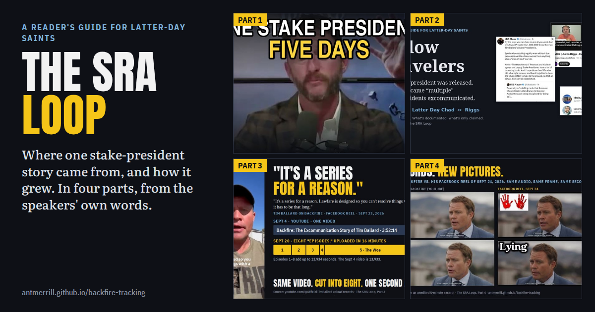
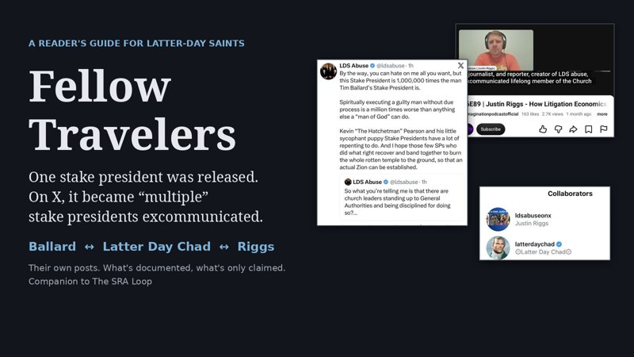
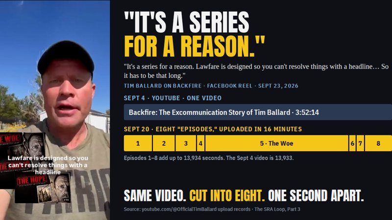
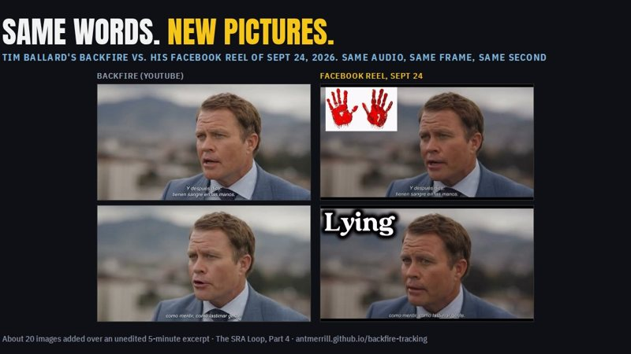
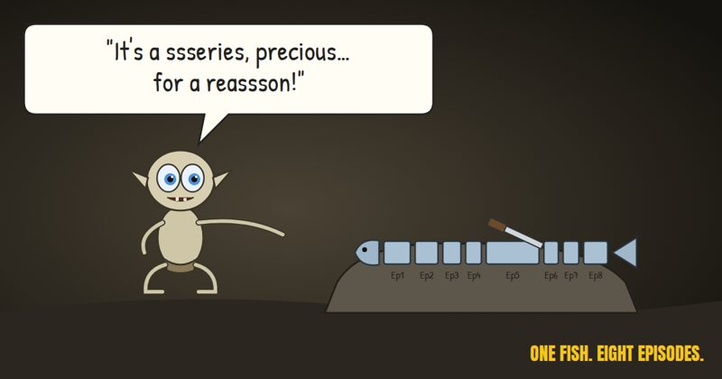
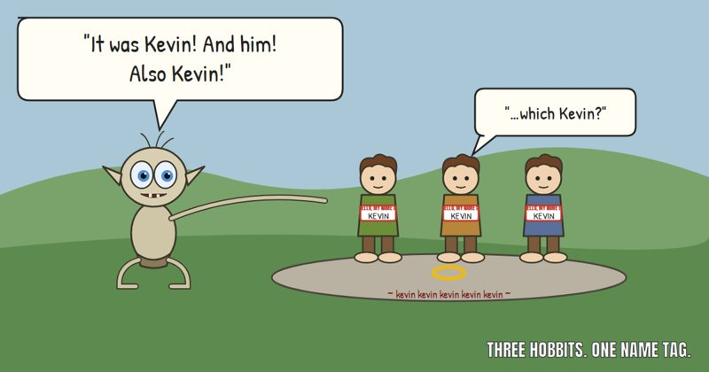
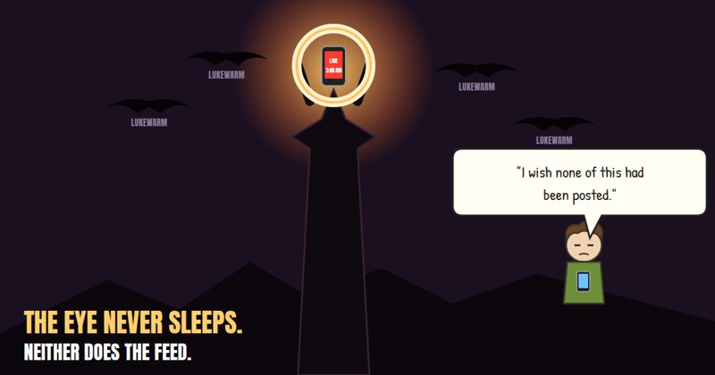

The SRA Loop
A story about a stake president being excommunicated for protecting church members has spread through a small circle of online voices around Tim Ballard. This guide follows it from where it first appears, using the speakers' own videos and posts.

This guide doesn't ask you to think less of anyone's faith, or to take anyone's side. It asks one thing: before you accept or pass on an accusation, look at where it comes from and how it changed along the way.
The story in one timeline
- Sept 4, 2026 Part 4Tim Ballard's Backfire video includes his own story. A stake president was pressured by "the guys up top" to discipline a former employee of his, refused, and told her to "pretend you've been excommunicated." Ballard bleeps the name himself.
- About Sept 17 Part 1Ballard posts on Instagram that another stake president told him Jason Preston's stake president was excommunicated for refusing to excommunicate the Prestons. Preston first says in the comments that it isn't true.
- Sept 20 Part 3Eight "Backfire Episode 1–8" videos go up on Ballard's YouTube channel within 16 minutes. Together they are the September 4 video, cut into pieces.
- Sept 21 Part 1Preston, on his own channel: "our stake president was excommunicated himself." Ballard reposts it: "This is pure EVIL!" Latter Day Chad amplifies it the same night.
- Sept 22 Part 2Justin Riggs (@ldsabuse) on X makes it plural: "multiple Utah Stake Presidents being excommunicated for standing up to him."
- Sept 23 Part 3Ballard: Backfire is "a series for a reason. Lawfare is designed so you can't resolve things with a headline."
- Sept 24Preston's next video narrows the claim. His former stake president wrote that his refusal "was not received well, and there were some consequences," and Preston says the reason membership was withdrawn "has not been established." (video)
- Sept 24–25 Part 4Ballard posts four reels overnight. One lays new images over unchanged Backfire audio: "Lying," bloody hands, crying children. At 2:08 a.m. he reposts his own stake-president story.
The four parts
The SRA Loop
How one stake-president story moved between Tim Ballard, Jason Preston and Latter Day Chad in five days, and what's documented versus claimed.
Read Part 1 →
Fellow Travelers
Justin Riggs on X, how the story grew to "multiple" stake presidents, and when Backfire actually began.
Read Part 2 →
"It's a series for a reason"
Ballard says Backfire has to be a long series. His YouTube records show eight episodes cut from one video in 16 minutes.
Read Part 3 →
Same words, new pictures
Four reels in one night: the same audio with new images added, and the stake-president story Ballard told first.
Read Part 4 →More: What "Episode 1" is made of · Sunday School at 2 AM · TB Backfire Log (every video, catalogued)
Before you share anything about this
- Who said it first? Several of these stories trace back to a single second-hand source.
- Did it change as it spread? "One stake president" became "multiple." "Excommunicated" became "some consequences."
- Is a name, date or document attached? Most of these accounts give none.
- Is it about a private person? Rumors about someone's personal life aren't evidence of anything else. Don't pass them on.
The lighter side
Cartoons, for sharing. No real people are depicted.


